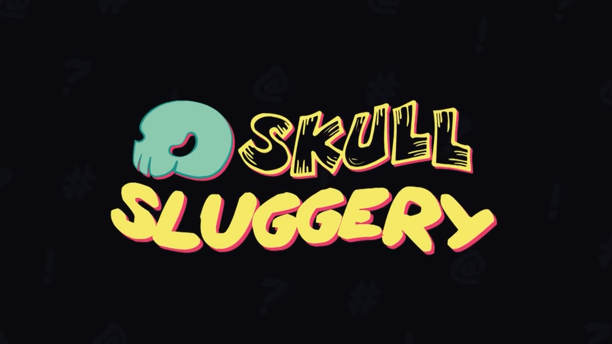

SKULL SLUGGERY
Made by a group of final year students called "Boneheads" in 2022, Skull-Sluggery is a 2.5D Isometric Roguelike about a rough,
tough skeleton boy fighting his way through 1980s arcade Purgatory.
The player must take on a host of enemies straight out of classic bootleg arcade games with just a bubble gun, demonic powerups and a can-do attitude.
I was a second year contractor student working for "Boneheads" as part of my module "professional awareness" in which I went through the experience
of preparing a CV, portfolio and then being interviewed by final year students to work on their projects as a part-time contractor.
As part of my contract work I was asked by the team lead to work on backend systems for the game.
Which Included:
- Audio Management System: In Boneheads, I collaborated with the programmers to develop a system that allowed designers
to add sound effects to trigger during in-game events, like player damage. The system randomly selected and played a
sound from the list, enhancing audio diversity and reducing repetition.
- Menu Navigation System: A script I designed to add controller support to Unity's UI-based menus. Designers attach it
to menus and populate a list with menu items, including buttons and sliders. This simplifies menu setup, enabling easy
addition of controller support and sprite switching for button selection.
In addition to the work I did for Boneheads, I also attended their weekly scrum meetings in which I discussed the tasks I had been given, how I was doing with them and if I encountered any issues I needed help with aswell as discussing ideas for the game itself with the team.
